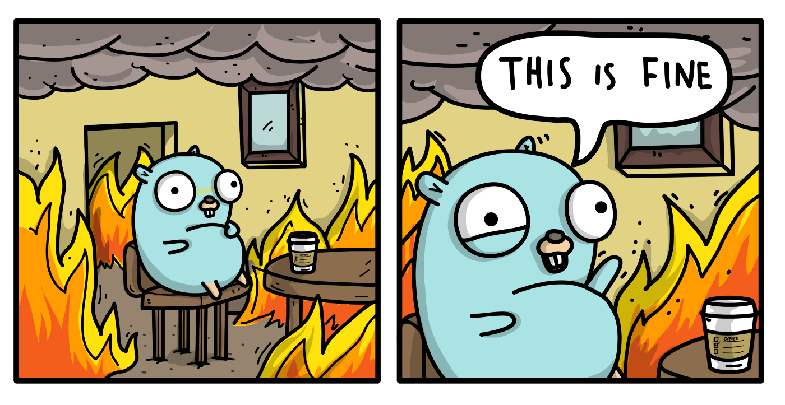

Как
Тестировать Инфраструктурный Код
~ infra-test describe current-user
12 лет в обеспечении качества
6 лет автоматизирую тестирование
5 лет в DINS
3 года строю CI/CD
2 года в Калифорнии
~ infra-test describe problem
команда разработки
хочет сама деплоить
деплоит
инфраструктуру
~ infra-test describe problem
облачные вычисления
инфраструктура как код
~ infra-test describe "облачные вычисления"
как услуга:
SaaS - программное обеспечение
PaaS - платформа
IaaS - инфраструктура
~ infra-test describe "инфраструктура как код"
скорость - автоматизируем рутину
цена - экономим время
риски - человеческий фактор
~ infra-test answer "почему я?"
чтобы
применить лучшие практики
обеспечить инфраструктуру тестирования
и не бояться делать изменения
~ infra-test list requirements
docker
kubernetes
helm
aws
terraform
~ infra-test solve problem --dry-run
нет времени/желания тестировать?
статический анализ!
~ infra-test describe "статический анализ"
встроенные средства
$ terraform validate
$ helm template
$ kubectl -f . --dry-run --validate=true
~ infra-test describe "статический анализ"
lint
$ tflint
$ hadolint
$ helm lint
$ kube-lint
$ yamllint
~ infra-test describe "статический анализ"
dry-run
$ terraform plan
$ helm install --dry-run
$ kubectl apply -f FILENAME --server-dry-run
~ infra-test solve problem
есть временя/желание тестировать?
выбираем инструмент!
~ infra-test list tools
(kitchen|rspec|ruby)-terraform
serverspec
goss
awsspec
terratest
~ infra-test select "terratest"
а еще нужно будет изучить Go

~ infra-test compare java go
OOP
DI
Generics
Exceptions
~ infra-test test terraform
infra-test-example
└ examples
└ hello-terraform
└ main.tf
└ outputs.tf
└ variables.tf
└ modules
└ test
└ hello_terraform_test.go
~ infra-test view main.tf
resource "aws_lambda_function" "hello_world" {
function_name = "HelloWorld"
role = aws_iam_role.lambda_exec.arn
# ...
}
resource "aws_iam_role" "lambda_exec" {
name = "serverless_lambda"
# ...
}
~ infra-test test terraform
$ cd examples/hello-terraform
$ terraform apply
Outputs:
url = abcdefghij.execute-api.us-east-1.amazonaws.com
$ curl abcdefghij.execute-api.us-east-1.amazonaws.com
Hello, World!
~ infra-test view hello_terraform_test.go
func TestTerraformHelloWorld(t *testing.T) {
terraformOptions := &terraform.Options{
TerraformDir: "examples/hello-terraform",
}
defer terraform.Destroy(t, terraformOptions)
terraform.InitAndApply(t, terraformOptions)
validate(t, terraformOptions)
}
~ infra-test view hello_terraform_test.go
func validate(t *testing.T, opts *terraform.Options) {
url := terraform.Output(t, opts, "url")
http_helper.HttpGetWithRetry(
t, // testing.TestingT
url, // url
nil, // tlsConfig
200, // expectedStatus
"Hello, World!", // expectedBody
10, // retries
3 * time.Second // sleepBetweenRetries
)
}
~ infra-test test kubernetes
infra-test-example
└ examples
...
└ hello-k8s
└ Dockerfile
└ deployment.yaml
└ modules
└ test
...
└ hello_k8s_test.go
~ infra-test view Dockerfile
FROM ubuntu:21.04
EXPOSE 8080
ARG DEBIAN_FRONTEND=noninteractive
RUN apt-get update && apt-get install -y busybox
RUN echo 'Hello, World!' > index.html
CMD ["busybox", "httpd", "-f", "-p", "8080"]
~ infra-test view deployment.yaml
apiVersion: apps/v1
kind: Deployment
metadata:
name: hello-world
spec:
selector:
matchLabels:
app: hello-world
replicas: 1
spec:
containers:
- name: hello-world # ...
---
apiVersion: v1
kind: Service # ...
~ infra-test describe deployment
┌───────────────────────────┐
│ Deployment │
└─────────────┬─────────────┘
┌─────────┼─────────┐
┌───┴───┐ ┌───┴───┐ ┌───┴───┐
│Replica│ │Replica│ │Replica│
│ Set │ │ Set │ │ Set │
│ v1│ │ v2│ │ v3│
└───┬───┘ └───┬───┘ └───┬───┘
┌┼┐ ┌┼┐ ┌┼┐
┌─┴┴┤ ┌─┴┴┤ ┌─┴┴┤
│Pod├┐ │Pod├┐ │Pod├┐
└┬──┘├┐ └┬──┘├┐ └┬──┘├┐
└┬──┘│ └┬──┘│ └┬──┘│
└───┘ └───┘ └───┘
~ infra-test test kubernetes
$ cd examples/hello-k8s
$ docker build -t infra-test/hello-world:latest .
Successfully tagged infra-test/hello-world:latest
$ kubectl apply -f .
deployment.apps/hello-world created
service/hello-world created
$ curl localhost:8080
Hello, World!
~ infra-test view hello_k8s_test.go
func TestKubernetesHelloWorld(t *testing.T) {
buildDockerImage(t)
kubeResourcePath := "examples/hello-k8s/deployment.yml"
options := k8s.NewKubectlOptions("", "", "default")
defer k8s.KubectlDelete(t, options, kubeResourcePath)
k8s.KubectlApply(t, options, kubeResourcePath)
validate(t, options)
}
~ infra-test view hello_k8s_test.go
func buildDockerImage(t *testing.T) {
options := &docker.BuildOptions{
Tags: []string{"infra-test/hello-world:latest"},
}
path := "examples/hello-k8s"
docker.Build(t, path, options)
}
~ infra-test view hello_k8s_test.go
func TestKubernetesHelloWorld(t *testing.T) {
buildDockerImage(t)
kubeResourcePath := "examples/hello-k8s/deployment.yml"
options := k8s.NewKubectlOptions("", "", "default")
defer k8s.KubectlDelete(t, options, kubeResourcePath)
k8s.KubectlApply(t, options, kubeResourcePath)
validate(t, options)
}
~ infra-test view hello_k8s_test.go
func validate(t *testing.T, opts *k8s.KubectlOptions) {
k8s.WaitUntilServiceAvailable(t,
opts, "hello-world", 10, 1*time.Second)
http_helper.HttpGetWithRetry(
t, // testing.TestingT
serviceUrl(t, opts), // url
nil, // tlsConfig
200, // expectedStatus
"Hello, World!", // expectedBody
10, // retries
3 * time.Second // sleepBetweenRetries
)
}
~ infra-test view hello_k8s_test.go
func serviceUrl(t *testing.T, opts *k8s.KubectlOptions) string {
service := k8s.GetService(t,
opts, "hello-world")
url := k8s.GetServiceEndpoint(t, opts, service, 8080)
return fmt.Sprintf("http://%s", url)
}
~ infra-test view hello_k8s_test.go
func validate(t *testing.T, opts *k8s.KubectlOptions) {
k8s.WaitUntilServiceAvailable(t,
opts, "hello-world", 10, 1*time.Second)
http_helper.HttpGetWithRetry(
t, // testing.TestingT
serviceUrl(t, opts), // url
nil, // tlsConfig
200, // expectedStatus
"Hello, World!", // expectedBody
10, // retries
3 * time.Second // sleepBetweenRetries
)
}
~ infra-test test helm
infra-test-example
└ examples
...
└ hello-helm
└ templates
└ deployment.yaml
└ service.yaml
└ _helpers.tpl
└ Chart.yaml
└ values.yaml
└ modules
└ test
...
└ hello_helm_test.go
~ infra-test view Chart.yaml
apiVersion: v1
name: hello_helm
description: A minimal Helm chart
version: 0.0.1
~ infra-test view values.yaml
stage: pro
version: latest
~ infra-test view _helpers.tpl
{{- define "rc.replicas" -}}
{{- $stage := .Values.stage | lower -}}
{{- if (eq $stage "pro") -}}
{{- print 5 -}}
{{- else if (eq $stage "stage") -}}
{{- print 3 -}}
{{- else -}}
{{- print 1 -}}
{{- end -}}
{{- end -}}
~ infra-test view deployment.yaml
apiVersion: apps/v1
kind: Deployment
# ...
spec:
replicas: {{ include "rc.replicas" }}
# ...
template:
# ...
spec:
containers:
- name: hello-world
image: infra-test/hello-world:{{ .Values.version }}
~ infra-test view hello_helm_test.go
func TestHelmHelloWorld(t *testing.T) {
options := &helm.Options{
SetValues: map[string]string{
"stage": "stage",
"version": "v1",
},
KubectlOptions: k8s.NewKubectlOptions("", "", "my-ns"),
}
output := helm.RenderTemplate(t,
options,
"examples/hello-helm", // path to chart
"hello-helm", // release
[]string{"templates/deployment.yaml"}) // show only
var deployment appsv1.Deployment
helm.UnmarshalK8SYaml(t, output, &deployment)
require.Equal(t, deployment.Spec.Replicas, 3)
require.Equal(t,
deployment.Spec.Template.Spec.Containers[0].Image,
"infra-test/hello-world:v1")
}
~ infra-test solve problem
модульные тесты
работают в независимых аккаунтах
и требуют регулярной чистки
~ infra-test view real-world-terraform
┌───┐
│AWS│
├───┼─────────────┐
│VPC│ ┌───┬───┐ │
┌───┐ ┌───┐ ├───┘ │EKS│ │ │
│AWS│ │AWS│ │ ├───┘ │ │
├───┴───┐ ├───┴───────┐ │ ┌───┐ │ ┌───┐ │ │
──>│Route53├──>│API Gateway├───┼>│ALB├─┼>│APP│ │ │
└───────┘ └───────────┘ │ └───┘ │ └─┬─┘ │ │
│ └───┼───┘ │
│ ┌───┐ │ │
│ │MSK│<────┘ │
│ └───┘ │
└─────────────────┘
~ infra-test view real-world-k8s
┌───────┐ ┌───────┐
│Ingress├───┤Service│
│ BBB│ │ BBB│
└───────┘ └───┬───┘
┌──────────┐ ┌──────────┐ ┌─────┴────┐ ┌──────────┐
│Autoscaler├───┤Deployment├───┤Deployment├───┤Autoscaler│
│ AAA│ │ AAA│ │ BBB│ │ BBB│
└─────┬────┘ └─────┬────┘ └─────┬────┘ └──────────┘
┌────┴───┐ ┌───│──────────┬───┴─┐
│External│ │ ├───────┐ │ │
│ Metric│ │ │ │ │ │
└────────┘ ┌─┴───┴───┐ ┌─┴──┴─┐ ┌─┴───────┐
│ConfigMap│ │Secret│ │ConfigMap│
│ Common│ │Common│ │ BBB│
└─────────┘ └──────┘ └─────────┘
~ infra-test view real-world-helm
не пытайтесь понять этот код
{{- define "rc.deployment.spec.replicas" -}}
{{- $instance := (required "A valid instance is required!" .Values.instance) | lower -}}
{{- if eq $instance "aaa-pro" -}}{{- $instance = "aaapro" -}}{{- end -}}
{{- $r := "" -}}
{{- $useDefault := false -}}
{{- $hasDefaultKey := false -}}
{{- if hasKey .Values.profiles $instance -}}
{{- if or (not (hasKey (get .Values.profiles $instance) "replicas")) (empty ( toString (get (get .Values.profiles $instance) "replicas"))) -}}
{{- $useDefault = true -}}
{{- end -}}
{{- else -}}
{{- $useDefault = true -}}
{{- end -}}
{{- if not (empty .Values.profiles.default) -}}
{{- if (hasKey .Values.profiles.default "replicas") -}}
{{- $hasDefaultKey = true -}}
{{- end -}}
{{- end -}}
{{- if and $useDefault $hasDefaultKey -}}
{{- $r = .Values.profiles.default.replicas | toString | atoi -}}
{{- else if and (not $useDefault) (hasKey .Values.profiles $instance) -}}
{{- $r = (get (get .Values.profiles $instance) "replicas") | toString | atoi -}}
{{- else -}}
{{- fail (printf "profiles.%s.replicas or profiles.default.replicas required" $instance) -}}
{{- end -}}
replicas: {{ $r }}
{{- end -}}
~ infra-test solve problem
интеграционные тесты
надо запускать параллельно
~ infra-test view examples
func TestTerraformHelloWorldOne(t *testing.T) {
t.Parallel()
// test code
}
func TestTerraformHelloWorldTwo(t *testing.T) {
t.Parallel()
// test code
}
~ infra-test solve problem
интеграционные тесты
надо запускать параллельно
с продуманными именами ресурсов
~ infra-test view integration_test
resource "aws_iam_role" "lambda_exec" {
name = var.name
# ...
}
apiVersion: apps/v1
kind: Deployment
metadata:
name: {{ .Values.name }}
# ...
~ infra-test solve problem
интеграционные тесты
надо запускать параллельно
с продуманными именами ресурсов
разделяя на независимые стэйджи
~ infra-test view integration_test
stage := test_structure.RunTestStage
defer stage(t, "cleanup_terraform" , cleanupTerraform)
stage(t, "deploy_terraform", deployTerraform)
defer stage(t, "cleanup_k8s_app", cleanupK8sApp)
stage(t, "deploy_k8s_app", deployK8sApp)
stage(t, "validate", validate)
~ infra-test view integration_test
$ SKIP_cleanup_terraform=true
$ SKIP_cleanup_k8s_app=true
$ go test
Running stage 'deploy_terraform'…
Running stage 'deploy_k8s_app'…
Running stage 'validate'…
Skipping stage 'cleanup_k8s_app'…
Skipping stage 'cleanup_terraform'…
~ infra-test solve problem
интеграционные тесты
надо запускать параллельно
с продуманными именами ресурсов
разделяя на независимые стэйджи
и с автоматическим ретраем
~ infra-test view hello_terraform_test.go
func TestTerraformHelloWorld(t *testing.T) {
options := &terraform.Options{
TerraformDir: "examples/hello-terraform",
MaxRetries: 3,
RetryableTerraformErrors: map[string]string{
"regexp to match against the error": "42",
},
})
// ...
}
~ infra-test use-cases "terratest"
тестирование инфраструктурного кода
post-deployment верификация
тестирование CI/CD пайплайнов
разработка SaaS и PaaS
обновление версий
~ infra-test answer "почему я?"
Вопросы